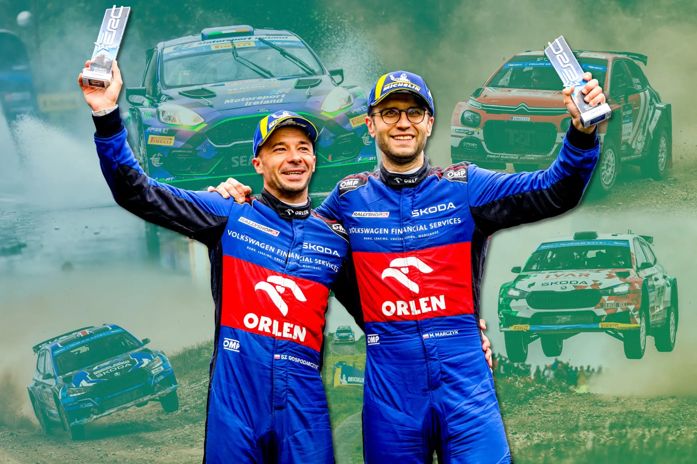
A Look Back at the 2025 ERC Season
Header: Zenor Designs
The European Rally Championship season drew to a close in Croatia this past weekend, with Miko Marczyk emerging victorious. The mix of ERC regulars and rapid local drivers made for a thrilling championship fight between three drivers, and also gave us exciting events with unpredictable results.
But who was the fastest driver among the regulars, and who delivered the season's most dominant perfomances? Who was the driver most affected by accidents, and who which tyre manufacturer had the most punctures this season?
All this and more in this 2025 ERC Season Review!
Before we dive in, let's break down how these numbers are determined! There are two key variables: Deficit to Ideal Time (measured in seconds per kilometer) and Percentage of Stages Completed with a Representative Time (expressed as a percentage). The first variable, Deficit to Ideal Time, reflects a driver's speed. It is calculated by comparing the driver's performance to the ideal pace, where the ideal pace is defined as a driver who won all the stages. Essentially, this shows how fast or slow a driver was throughout the season.
The second variable, Percentage of Stages Completed with a Representative Time, relates to a driver's reliability. This percentage is based on the number of stages a driver completed within a competitive time relative to the total number of stages in the season.
A non-representative time might occur when a driver faces issues like mechanical problems, punctures, wrong tyre choices, or is simply cruising.
To determine if a time is non-representative, it is compared to times from either the previous run of the stage or times from the same loop. If the time has a deficit of more than 160% of the previous pass or loop average, it is classified as non-representative.
The opening round of the season was the all-new Rally Sierra Morena. The tarmac event was based in the city of Cordoba, and featured twisty but fast tarmac stages on mostly smooth tarmac. Road position was key, as the stages would get more and more polluted as more drivers passed through them, meaning first on the road was the place to be.
Nikolay Gryazin would win the Qualifying stage ahead of Jon Armstrong and Mikolaj Marczyk. The Bulgarian was set to contest a partial ERC campaign with J2X Rally Team, but would leave the Polish outfit after the rally.
Armstrong would be the first driver to hit trouble. The Irishman had a stall in the opening Super Special, and would then go off the road on Stage 4, losing more than a minute. Things would get worse on Sunday, where the Irishman would go wide, hit a bank and break his Fiesta Rally2's left rear suspension.
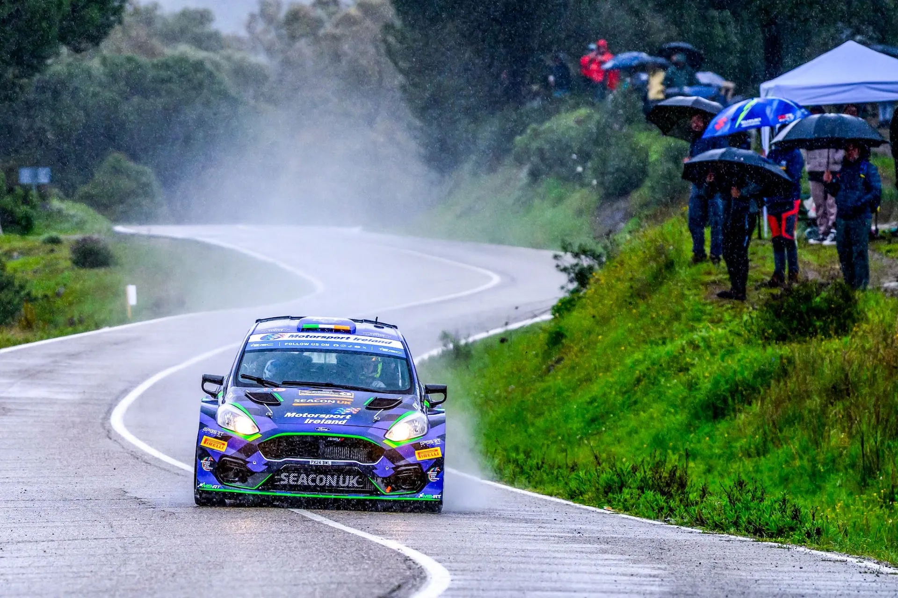
Despite showing promising pace, Jon Armstrong would leave Spain with no points
@World / Red Bull Content Pool
Nikolay Gryazin was leading the way, setting impressive times throughout the rally. Behind him, Yoann Bonato and Jose Antonio Suarez were engaged in a battle for second position. Bonato would come out on top after the Spaniard picked up a puncture on the first stage of Sunday, and dropped back.
Sunday's opening loop would prove to be quite treacherous, with Robert Virves going off in the same place as Armstrong, Dominik Stritesky would crash out as would Simone Tempestini.
Mads Ostberg would suffer mechanical issues throughout the rally, with his transmission failing on the final stage, finishing 8th.
Stephane Lefebvre would drive for Thierry Neuville's LifeLive team in an MRF backed Hyundai i20 Rally2, but would finish a lowly 9th.
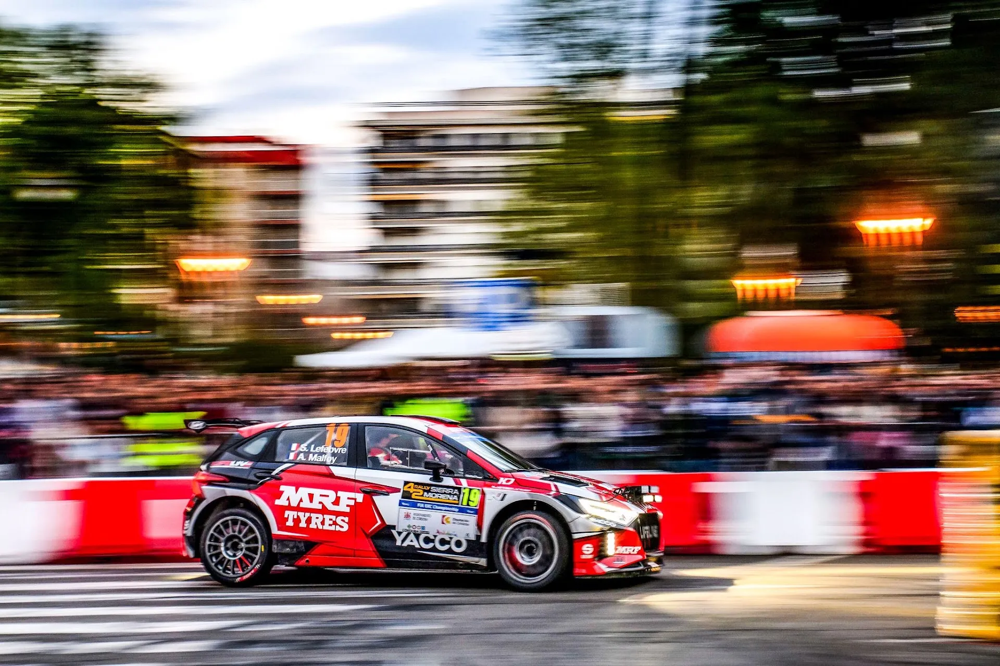
Lefebvre struggled with both the tyres and the car on tarmac
@World / Red Bull Content Pool
In the end, Nikolay Gryazin would win the event, ahead of Yoann Bonato and Jose Antonio Suarez. Andrea Mabellini would finish best of the regulars in 4th, 24 seconds ahead of Mikolaj Marczyk.
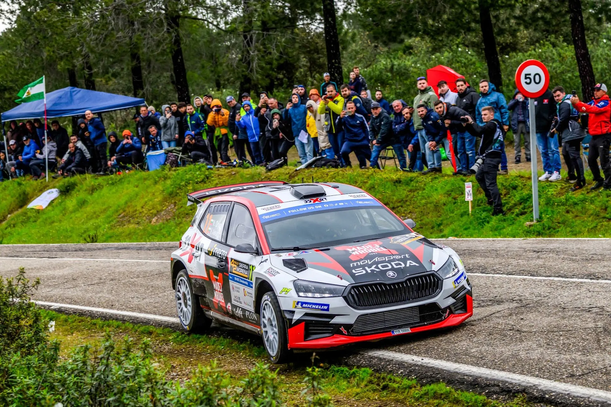
Gryazin would dominate Rally Sierra Morena
@World / Red Bull Content Pool
Rally Hungary would kick start the gravel season of the championship. Based in Veszprém, the event provided crews with a mix of fast forest stages on a sandy surface, and extremely rough roads almost like Safari.
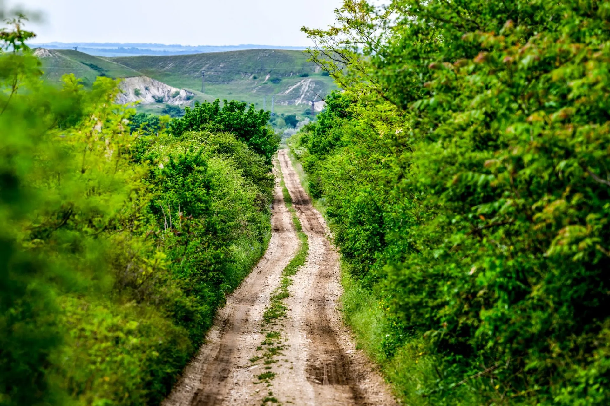
The unique stages of Rally Hungary provided a great show
@World / Red Bull Content Pool
Team MRF announced that WRC2 regular Roope Korhonen would be driving for the team in select events in 2025, and elso employed local Miklos Csomos as well as Max McRae for this event.
Csomos would retire on Friday after picking up two punctures while having only one spare, with Max McRae suffering a worse fate, as he broke his suspension in the opening SSS.
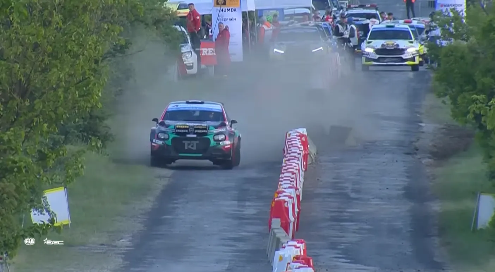
Max McRae's rally was effectively over on SSS1
FIA ERC - YouTube
Punctures would play a decisive role in this rally. Jon Armstrong was in a podium position when he picked up a puncture on SS4. The Irishman would also pick up a second puncture on SS10, finishing a lowly 10th despite his good pace.
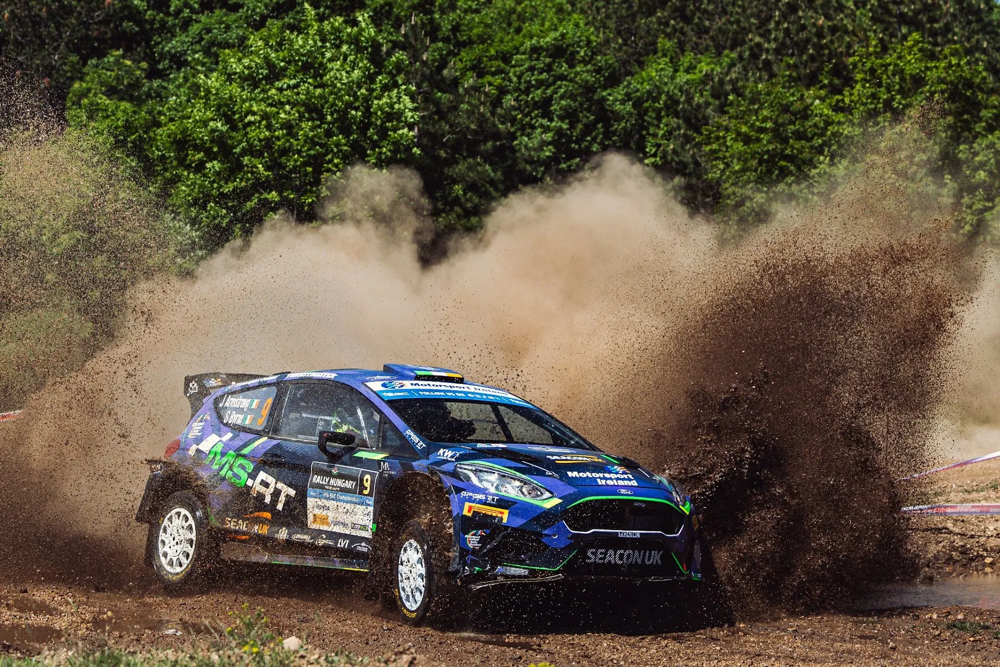
Bad luck would rob Armstrong of a potential podium finish
@World / Red Bull Content Pool
Sunday afternoon would prove dramatic. First, Roope Korhonen, Miko Marczyk and Simone Tempestini would pick up 10s penalties after benefiting from a ruined chicane, with Tempestini also picking up a puncture. Dominik Stritesky would lose a wheel on the same stage.
On the following stage, rally leader Andrea Mabellini would pick up a puncture, as would Korhonen and Ostberg. Isak Reiersen in his season debut would pick up two punctures, and would have to cruise for the rest of the loop.
But in the road section, Andrea Mabellini would retire after suspension issues, leaving Roope Korhonen to win the rally, ahead of Mads Ostberg and Miko Marczyk.
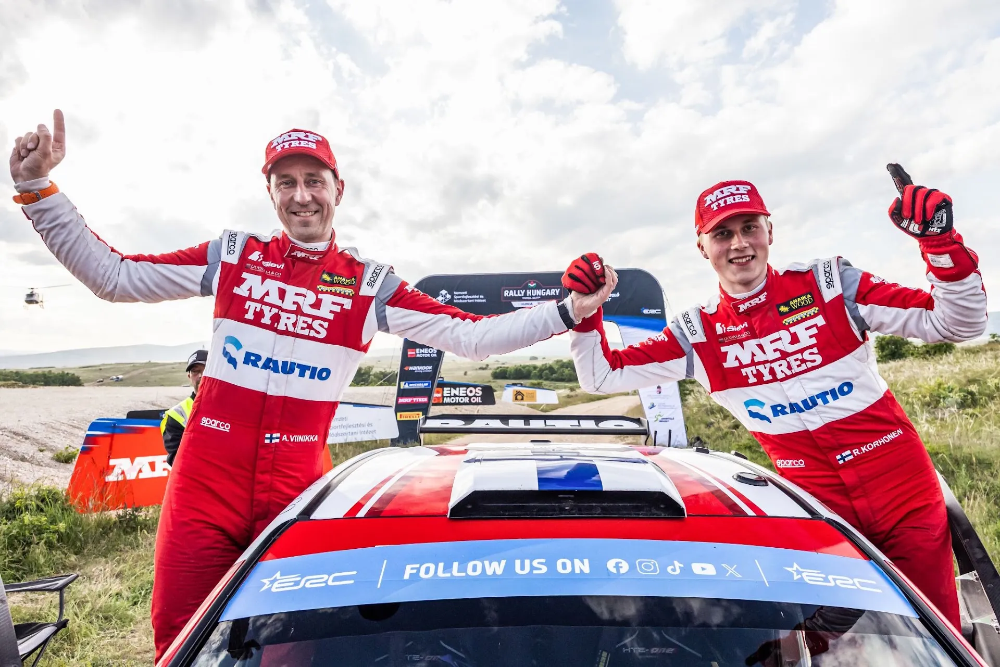
Roope Korhonen would get his first win in international competition in Hungary
@World / Red Bull Content Pool
The championship then moved on to Sweden for the Royal Rally of Scandinavia. Team MRF enlisted the help of Frank Tore Larsen for the event, with Stephane Lefebvre also returning but in a different car, using a Toyota Yaris Rally2.
Philip Allen would surprise everyone by winning the event's Qualifying stage, but the Northern Irishman would roll out of the event on Sunday.
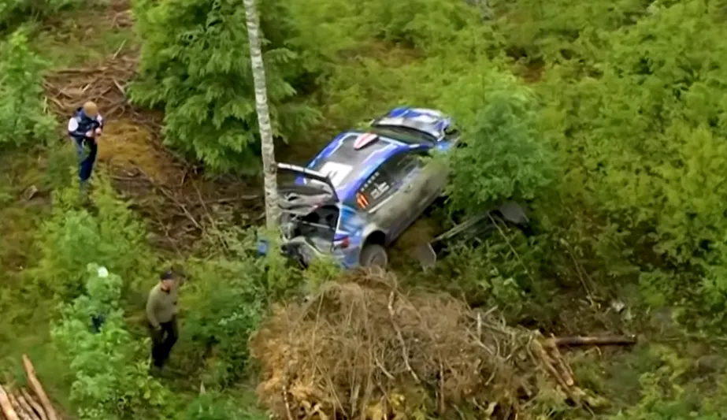
The aftermath of Philip Allen's off
FIA ERC - YouTube
Early on Saturday, it was a four-way battle for the lead between Eyvid Brynildsen, Mads Ostberg, local man Isak Reiersen and Frank Tore Larsen.
Ostberg would pick up a puncture on SS8, and would drop back, and a rain shower on SS9, the second pass of the Colins stage, would hamper the leaders and bring Roope Korhonen in to the frame.
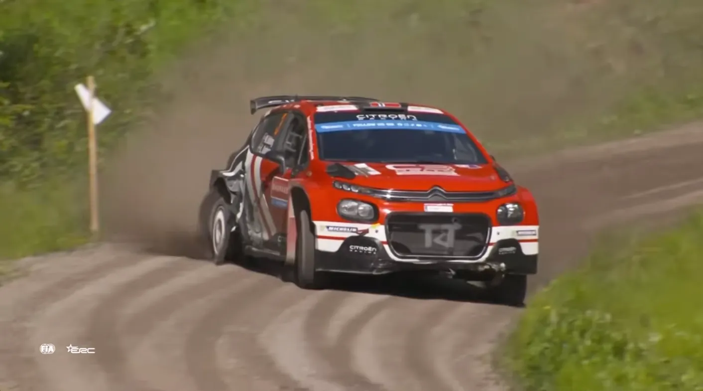
Ostberg would fall back due to a puncture
FIA ERC - YouTube
On Sunday, Brynildsen would slowly edge away from his rivals and win his first ERC event.
Reiersen and Korhonen would duke it out for second, with Korhonen narrowly beating out Reiersen by two great stage times on Sunday afternoon. This result would bring the Finn to the championship lead, overtaking Marczyk in the standings.
Mabellini would beat Larsen for 4th, with the Italian ahead of Miko Marczyk, who would finish 7th.
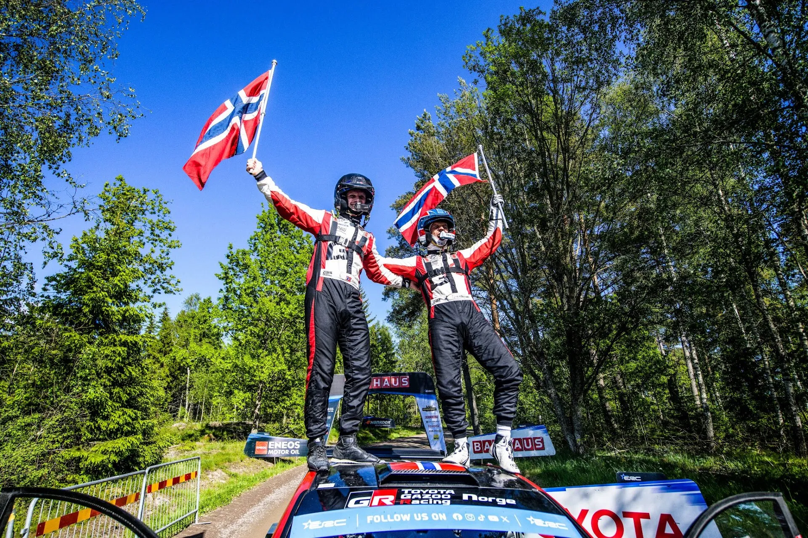
Brynildsen would win on his ERC comeback
@World / Red Bull Content Pool
Jon Armstrong was running in the fringes of the top 10 on Saturday, but the Irishman would again suffer a puncture, after clipping a rock in a cut. He would fight back and finish 10th, ahead of Stephane Lefebvre.
The ERC returned to Mikolajki after a year's absence, when the event was part of the WRC calendar.
For this event, Team MRF made a blockbuster signing, bringing back Martins Sesks for a one-off.
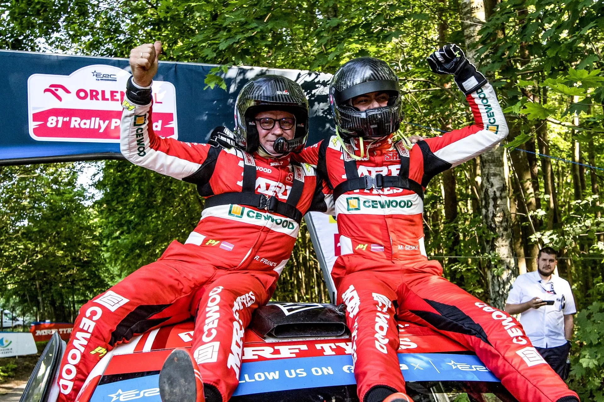
Sesks dominated in Poland
@World / Red Bull Content Pool
The Latvian would completely dominate the event, winning the event by over a minute, despite two off-road excursions. Sesks would put out the most dominant performance of the season, being just 0.02s/km off the ideal pace in the stages he competed in.
Roope Korhonen was the driver closest to the MRF driver, but the Finn would roll out of the event on Sunday's opening test.
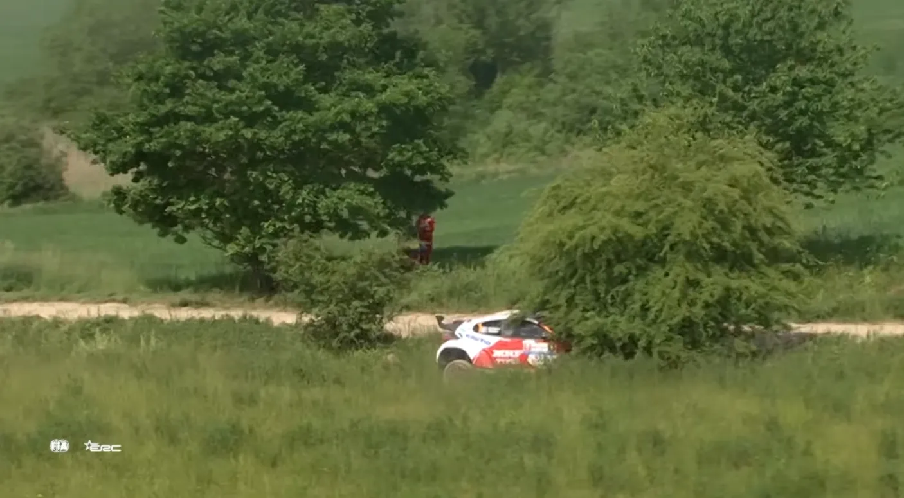
The aftermath of Korhonen's roll
FIA ERC - YouTube
Behind Sesks, Miko Marczyk would finish best of the rest in his home event and would snatch the championship lead away from Korhonen, with Jon Armstrong losing out on 2nd place due to a 10-second penalty. Further back, Isack Reiersen would finish in 4th place ahead of Mads Ostberg, with the Norwegian suffering a turbo failure on the second pass of the Mikolajki SSS on Saturday.
Championship hopeful Andrea Mabellini would not have a good rally, finishing in 8th place behind Simone Tempestini and Mille Johansson.
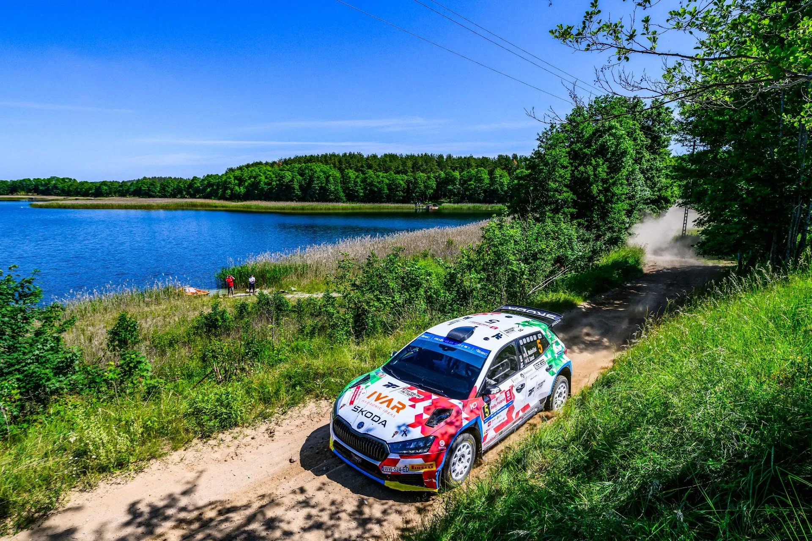
Mabellini struggled in Poland
@World / Red Bull Content Pool
This would be Stephane Lefebvre's last rally in the ERC this season, with the Frenchman breaking his suspension on SS2 on the event where he got his best WRC result 8 years ago.
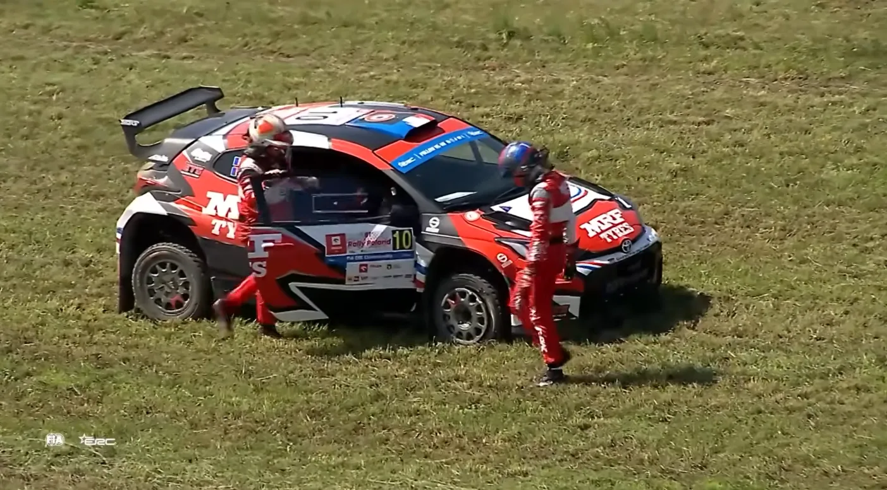
Lefebvre's season would come to a disappointing end
FIA ERC - YouTube
The championship returned to tarmac with a trip to Italy for Rally di Roma Capitale.
As the event was part of the Italian championship, the entry list would see many rapid locals compete. Team MRF also brought in Jan Solans for this event, who would finish a lowly 17th.
Last year's Roma Capitale winner Andrea Crugnola was setting the pace early on, leading the rally at the end of fellow Italian Giandomenico Basso, two time Rally di Roma Capitale winner and 2006 and 2009 ERC champion.
Behind the pair Miko Marczyk was in 3rd, with Andrea Mabellini in 4th, and Roberto Dapra close behind in 5th.
Dapra could have been leading the rally if it wasn't for a spin on the 34km Torre di Cicerone stage.
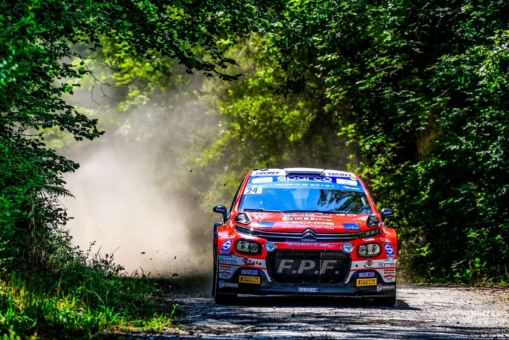
Crugnola was in the lead on day 1
@World / Red Bull Content Pool
Crugnola would lose the lead to Basso on SS9, but he'd regain it after a stage win on SS10. Sadly for the Italian, he'd incur a 20 second time penalty after a mix up after the SS10 regroup, with him dropping down to 5th.
Basso would move into the lead and would not relinquish it. Marczyk would lose out to Mabellini for 2nd, with Dapra finishing in 4th.
Many of the ERC drivers competing in partial or full time season were off the pace here. Armstrong would finish 11th and Johansson was in 15th.
Roope Korhonen was in 15th before he crashed, with Tempestini also retiring when outside the top 10 after hitting an animal and damaging his radiator.
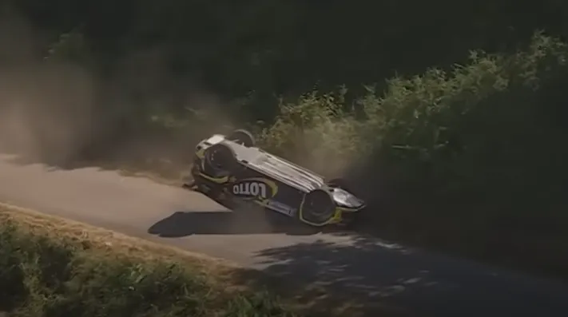
Jakub Matulka would be among the ERC regulars that were caught out in Italy
FIA ERC - YouTube
The jewel of the ERC calendar was next, Barum Rally Zlin in the Czech Republic. The event would see many Czech locals compete, like Filip Mares, Erik Cais, Adam Brezik and also former ERC and WRC2 champion Jan Kopecky, an 11-time winner of the event.
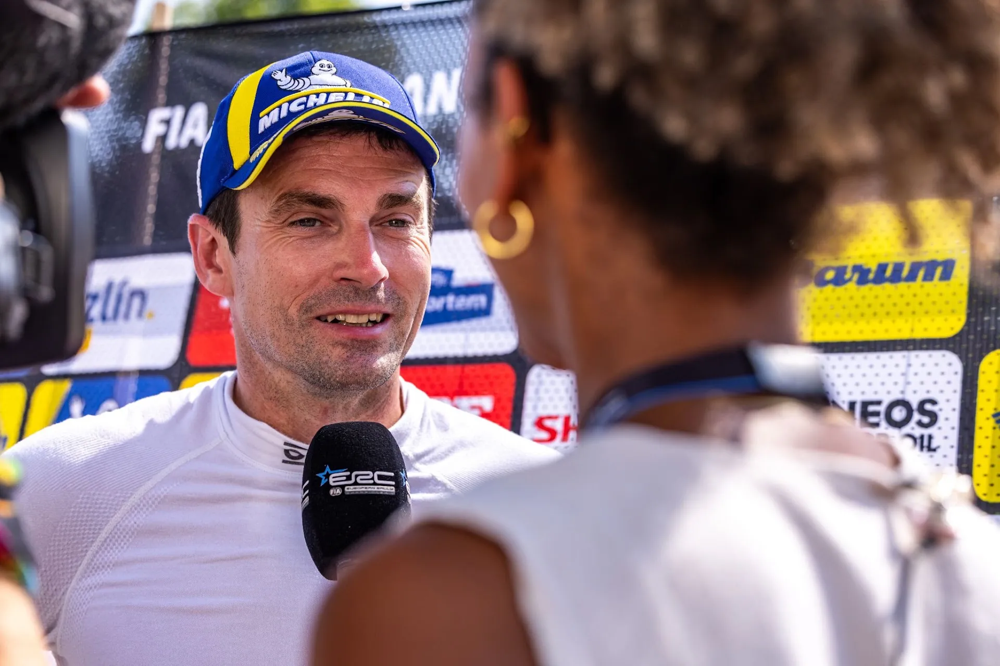
Jan Kopecky is a Czech rally legend
@World / Red Bull Content Pool
Team MRF would bring back Miklos Csomos for Zlin, and would also sign 2019 ERC champion Chris Ingram. Csomos would crash out on stage 2, and it wouldn't be a fairy tale return for the Brit either, with Ingram suffering three punctures as well as power steering issues. His pace was not great regardless, failing to finish inside the top 10 in any of the stages where he had a clean run.
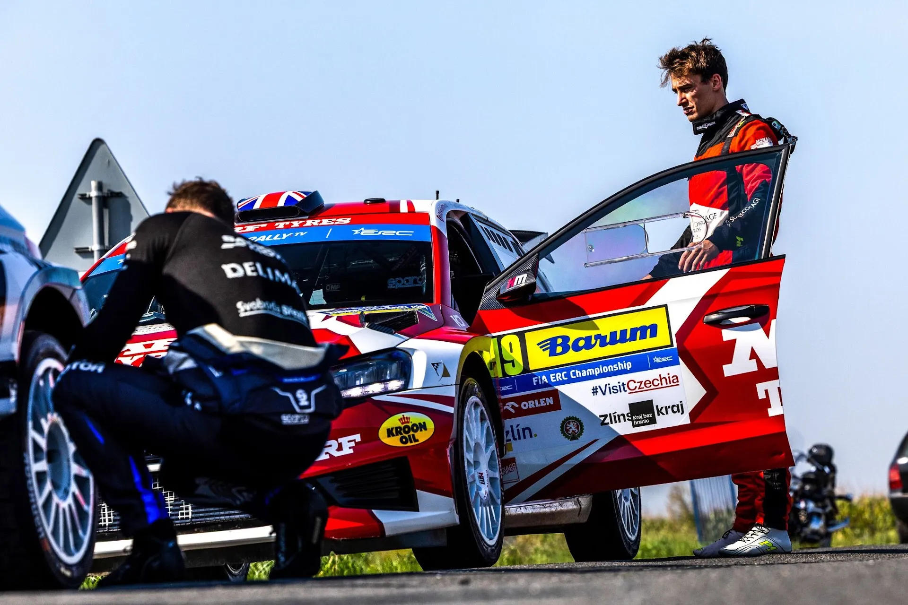
It wasn't a rosy return to the series for Chris Ingram
@World / Red Bull Content Pool
Kopecky would unsurprisingly lead the rally on Saturday. Behind the Czech, there was a three-way battle for 2nd between Andrea Mabellini, Simon Wagner and Jon Armstrong. The Irishman would come out on top, and would actually not be far off Kopecky throughout Sunday, and would finish in 2nd place, 10 seconds behind the Czech.
Mabellini would be the fastest driver on Sunday, finishing in 3rd, just 3.1s behind Armstrong.
Erik Cais was also quite fast driving a Kowax Hyundai i20 Rally2, but the Czech's bad luck in Zlin continued, with him picking up punctures and finishing 5th.
Another Czech with bad luck would be Dominik Stritesky, with the 2024 winner picking up 3 punctures after an overshoot, and would retire.
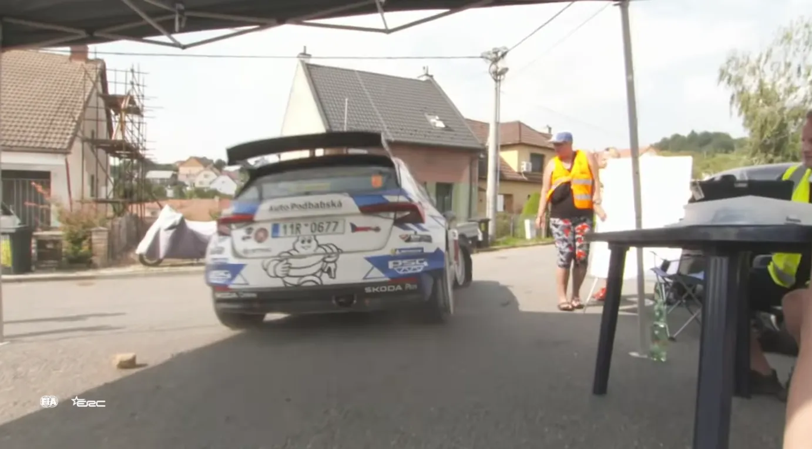
Dominik Stritesky would pick up three punctures and retire
FIA ERC - YouTube
Marczyk would finish 7th, behind Filip Mares. The Pole was still the championship leader. What Marczyk perhaps lacked in terms of pace, he more than made up by his incredible consistency, finishing all but one of the 82 stages after Zlin with a representative time!
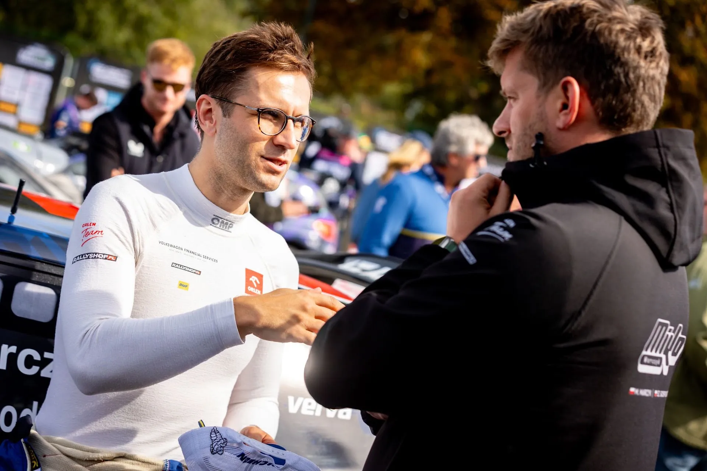
Miko Marczyk's unreal consistency saw him head the championship for most of the season
@World / Red Bull Content Pool
Rali Ceredigion was the penultimate round of the season. A rally with great stages, but not many entries. With the rally being on an island (and on a country outside of the EU), Ceredigion was the round most of the ERC regulars choose to skip.
Before the start of the rally, Andrea Mabellini would be handed a 2-minute penalty after some members of his team were caught driving through the rally's stages.
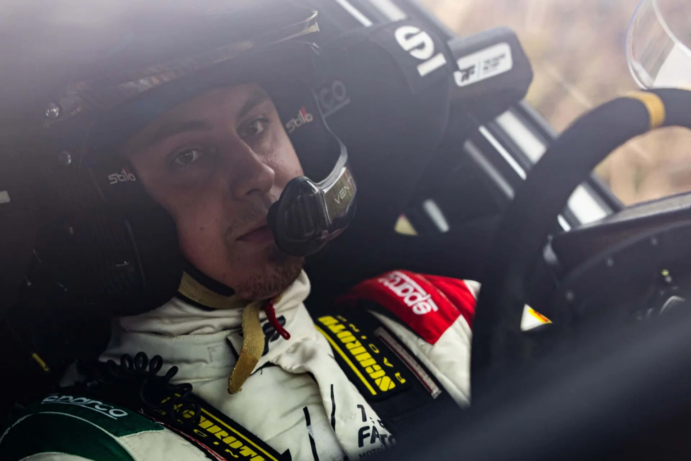
Mabellini found himself two minutes down before even the event started
@World / Red Bull Content Pool
Jon Armstrong had experience from similar rallies, and he made good use of it. The Irishman led from the get-go on Saturday morning.
Both passes of the Y Diafol stage would prove dramatic. On the first pass, Max McRae, Osian Pryce, Will Creighton and Jon Armstrong would all get caught out by a slippery junction near the stage finish, with McRae coming off worse, losing almost an hour, before crashing on the second pass.
In the second pass Jakub Matulka and Philip Allen would crash out heavily.
Mabellini would recover to 6th place by the end of the day, with championship rival Miko Marczyk in 3rd.
The Pole was behind a pair of Fiesta Rally2s, as Romet Jurgenson was in 2nd place, doing the rally as part of his BRC campaign.
On Sunday, Armstrong would win 3 out of the 4 of the day's stages and win his first ever ERC event.
Mabellini would win the power stage to salvage all he could from a compromised round.
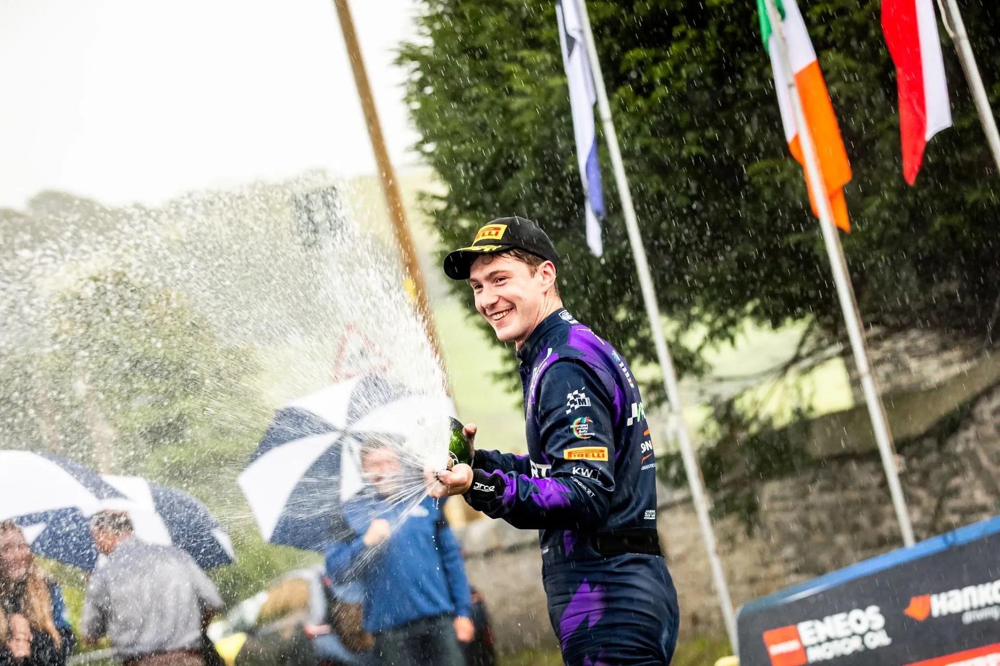
Armstrong kept his championship chances alive by winning in Ceredigion
@World / Red Bull Content Pool
Heading onto the finale in Croatia, it was a three-way fight for the title between Marczyck, Mabellini and Armstrong. Marczyck was leading the championship, 15 points ahead of Mabellini before dropped rounds were taken into account, with Armstrong 35 behind, needing a perfect result.
Alongside the trio, Jurgenson would also compete in Croatia, with Ostberg, Wagner, Johansson, Cais, Virves and Tempestini also returning among others.
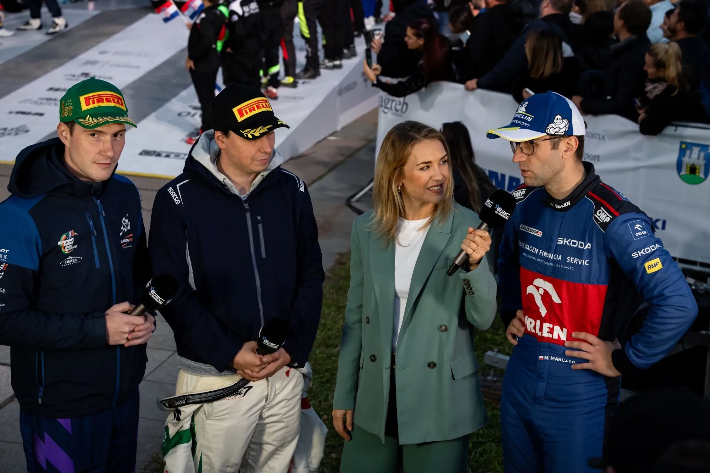
It would be a three-way battle to the end
@World / Red Bull Content Pool
On Saturday, not even a puncture could stop Armstrong, with the Irishman winning all of the day's stages bar one.
Despite having a bad road position due to an off in Shakedown, Jurgenson would be the one to win the stage where Armstrong would have his puncture, to make it a clean sweep for M-Sport. Sadly a puncture would drop the Estonian from 3rd to 8th on the ultimate stage of the rally.
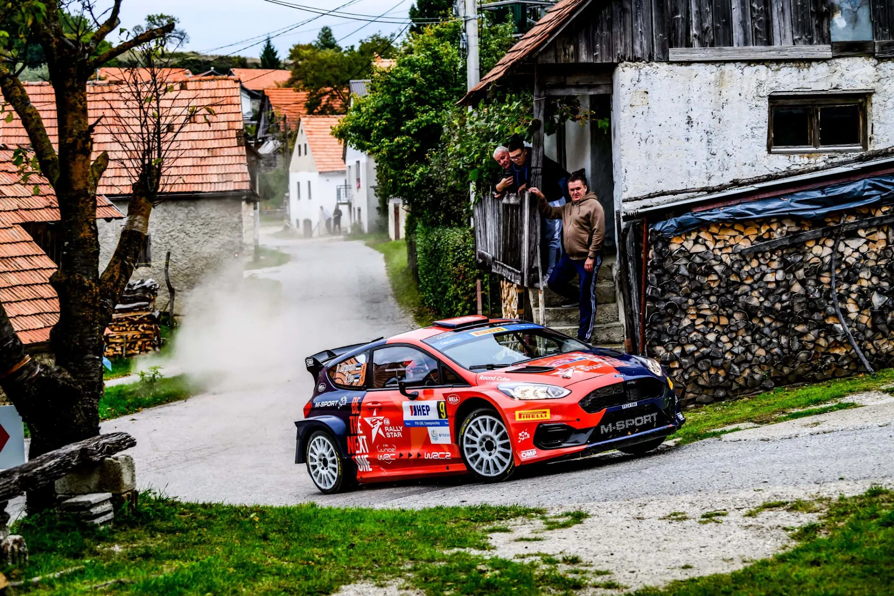
Jurgenson was in a podium position before his puncture
@World / Red Bull Content Pool
The championship would flip on his head on SS4. Andrea Mabellini would go off the road and retire from the rally, meaning it was championship over for the devastated Italian.
Marczyk would have an okay first loop, but would fall off massively in the afternoon, dropping down to 6th. As things stood at the end of Day 1, if Armstrong won the Power Stage and the rally, he'd be champion.
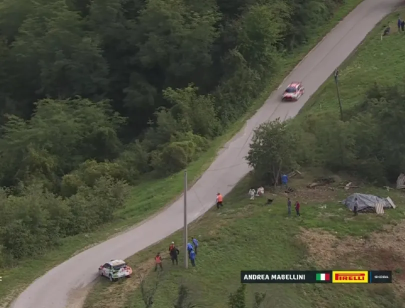
A bitter way to end the season for Mabellini
FIA ERC - YouTube
Things would turn on the first stage of Sunday however. A great stage time by Marczyk combined with Mille Johansson going off, saw the Pole climb to 4th place, and return to a championship winning position. The Michelin drivers had a great advantage in the rain, with Marczyk and Ostberg posting great times. Mille Johansson also went off the road in the tricky conditions from 4th.
Robert Virves would also have an off and go from 2nd to 8th, elevating Marczyk to 3rd. Nothing would change in the Power Stage, with Marzyck finishing in 3rd, and securing the ERC title.
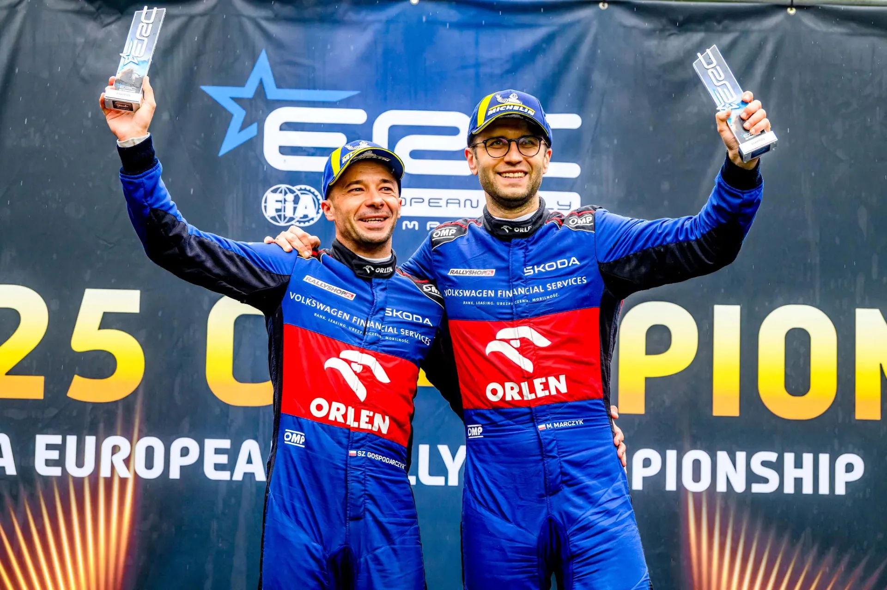
@World / Red Bull Content Pool
So where did every ERC regular rank in our graph? Well here it is:
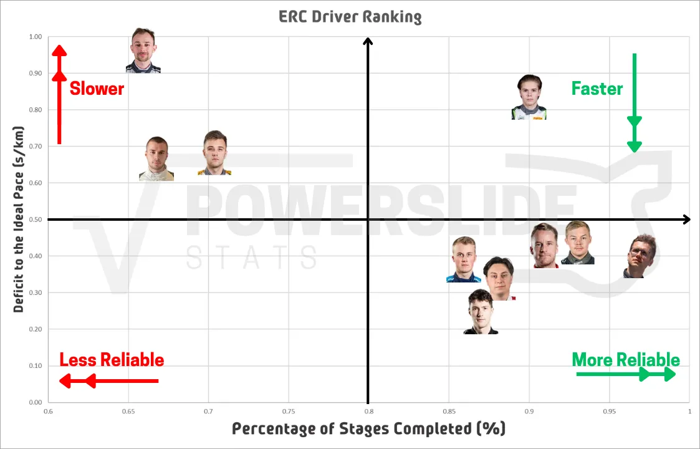
And if we were to expand it to include more of the regulars:
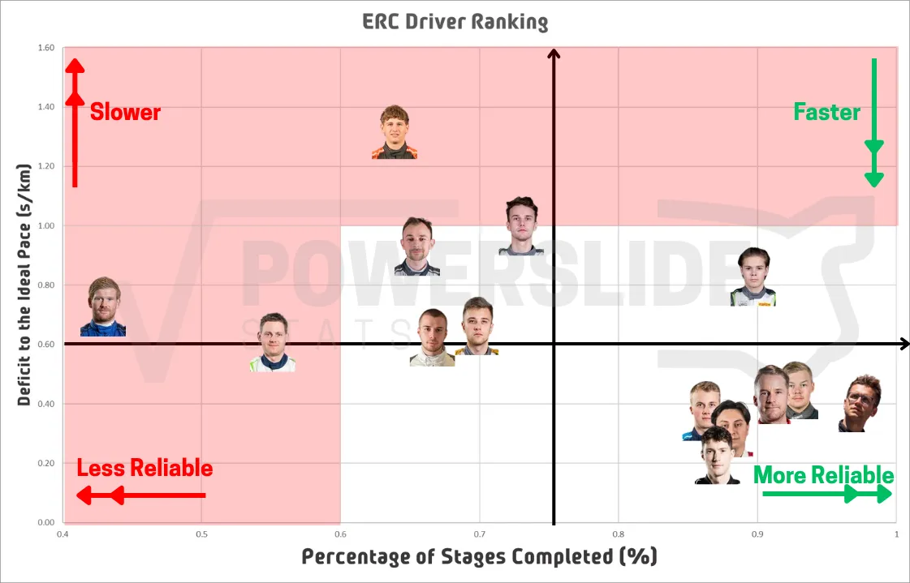
As you can see there is a quite clear divide between the more competitive regulars and the "others". Jon Armstrong finishes the year as the fastest driver in the ERC field, with a deficit of 0.28s/km to Mabellini's 0.37 s/km and Marczyk's 0.44.
The Pole might have been the slowest out of his rivals, but he was remarkably reliable. He only posted a non representative time in only 3 stages in the entire championship. Armstrong might have been the fastest, but was also the least reliable out of the three, partly thanks to his two offs in Sierra Morena and multiple punctures he had in the year.
Behind the three championship challengers was Roope Korhonen, who was decent on gravel events, but was more than a second per kilometer slower on the tarmac of Rome. The Finn also crashed out in Poland and Rome, which hurts his reliability score.
Isak Reiersen and Mads Ostberg are pretty even in this graph, with the Norwegian slightly faster and the Swede slightly more reliable. It's worth mentioning that Reiersen only competed in gravel rallies which usually had less of a field spread.
A special shout out to Philip Allen who managed to only finish 43% of stages he competed in this season. Granted, not all was his fault as he also suffered mechanical issues with his Fabia RS Rally2 (eg Rome), but most were due to accidents and offs.
As for punctures, MRF was the tyre manufacturer with the most punctures with 15 across their major entries, with Pirelli coming off second worse with 12, and Michelin in third with 8. Hankook had 7, but also had the least entries out of any of the other manufacturers.
When it comes to people that competed in one-off events, Martins Sesks gave us the most dominant performance of the season, with a deficit of just 0.02s/km in Rally Poland. Nikolay Gryazin's win in Sierra Morena was also great with just a 0.07s/km deficit, and Jon Armstrong's Poland win was almost equal that, at 0.08s/km.
Please use the "Desktop Site" option from your browser if you are on mobile for a better experience
And now here's also how every major entry did this season
Thank you everyone if you made it this far, lets hope we have an even better season next year!


Comments